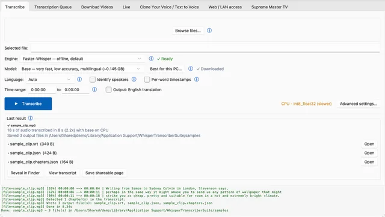
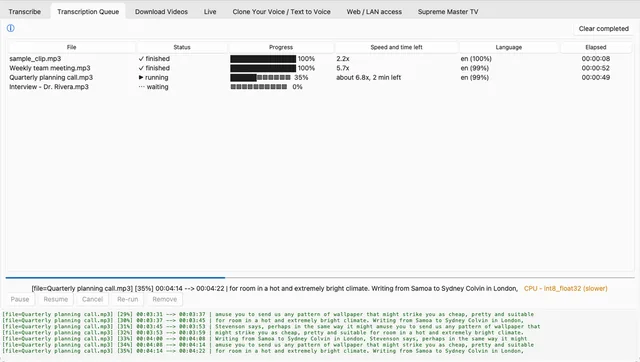
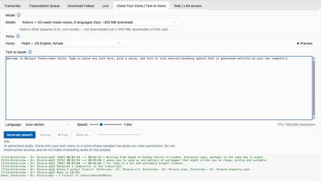
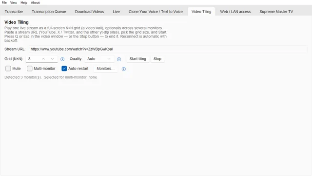
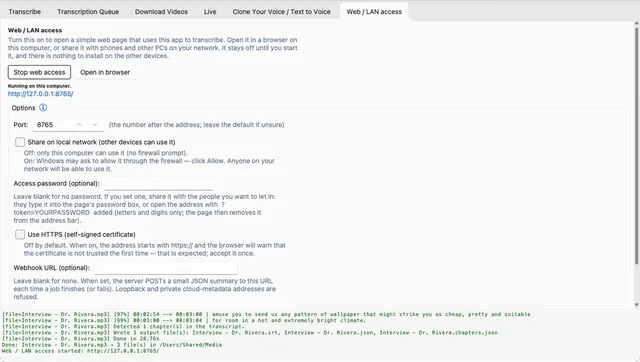

faster-whisper · whisper.cpp · Parakeet
Local, private transcription
Whisper large-v3 by default, plus large-v3-turbo and distil-large-v3.5. Pick the backend that fits your hardware.
Free & open source · BSD-3-Clause · v1.9.3
Whisper Transcriber Suite runs OpenAI's Whisper model entirely on your own computer — via faster-whisper, whisper.cpp or NVIDIA Parakeet. Drag in audio or video and get a timed transcript back. No cloud, no account, no per-minute cost.
Product tour
Drop a file, pick your options, press Transcribe. Everything else — the queue, downloads, live capture, voice cloning, video tiling and LAN sharing — sits one tab away. Drag the ring, or use the arrows.







Features
faster-whisper · whisper.cpp · Parakeet
Whisper large-v3 by default, plus large-v3-turbo and distil-large-v3.5. Pick the backend that fits your hardware.
14 formats
Written right next to your input file — plus oTranscribe, ELAN, InqScribe and Express Scribe for professional transcript workflows.
Mic · system audio
Transcribes a microphone — or whatever this machine is playing — as it happens. Cuts are made at natural pauses so words are never split.
Per-word timestamps
Optional "Identify speakers" pass, plus per-word timestamps and time-range clipping for editing precise segments.
Pause · resume · re-run
Live status for every pending and running job, with full control over each row always one click away.
yt-dlp powered
Anything yt-dlp handles, with optional transcribe-on-finish. Downloads resume rather than restart.
Measures before it filters
Measures each recording first and only cleans it when that helps — checks its own output and reverts if it removed speech.
Plus AI tools (summaries, action items, a bilingual SRT pass), an optional offline voice-cloning tab, a local-network mode and video tiling — full list in the README.
How it works
Every default engine runs in processes on your own computer. Nothing is uploaded unless you switch on one of the two opt-in cloud backends yourself.
Audio or video from disk, or anything yt-dlp can fetch. The Tk interface runs in the main process and queues the job instantly.
Every job runs in its own long-lived worker subprocess that keeps Whisper in memory and streams progress back over newline-delimited JSON — so the window never freezes.
A per-worker token and a heartbeat keep the routing robust and let the app detect a stuck worker instead of hanging with it.
Built on OpenAI's Whisper speech-recognition model, run locally through faster-whisper, whisper.cpp or NVIDIA Parakeet, with yt-dlp and FFmpeg for media handling.
Read the full architectureDownload · v1.9.3 · released 2026-09-26
Everything needed is bundled — a private Python runtime, ffmpeg, ffprobe and yt-dlp. Only the speech model itself downloads later (about 1–3 GB, once); after that, transcription works without an internet connection.
Windows Recommended for you
.exe~234 MB
Most people — normal installer, Start-menu shortcut, upgrades in place. The app isn't code-signed, so Windows SmartScreen may warn once: More info → Run anyway.
Get the installerWindows portable
.zip~354 MB
Unzip and run. No install, no admin rights, happy on a USB stick.
Get the ZIPmacOS Recommended for you
.dmg~246 MB · ~306 MB
Easiest: one line in Terminal — picks the right build and skips the security warning. Or grab the disk image for Apple Silicon or Intel.
One-line installLinux & source Recommended for you
Python 3.11+
git clone https://github.com/Milomilo777/whisper-transcriber-suite.git
cd whisper-transcriber-suite
pip install -r requirements.txt
python gui.pymacOS — one-line install
Downloads the right build for your Mac (Apple Silicon on macOS 14+, otherwise Intel via Rosetta), copies the app into Applications and opens it. Files fetched by curl aren't quarantined, so there's no "unidentified developer" warning to click past.
A=x64; [ "$(uname -m)" = arm64 ] && [ "$(sw_vers -productVersion | cut -d. -f1)" -ge 14 ] && A=arm64; curl -fL -o /tmp/wts.dmg "https://github.com/Milomilo777/whisper-transcriber-suite/releases/download/v1.9.3/WhisperTranscriberSuite-v1.9.3-macOS-$A.dmg" && hdiutil attach -nobrowse -quiet -mountpoint /tmp/wts-dmg /tmp/wts.dmg && cp -R "/tmp/wts-dmg/Whisper Transcriber Suite.app" /Applications/ && hdiutil detach -quiet /tmp/wts-dmg && rm /tmp/wts.dmg && open "/Applications/Whisper Transcriber Suite.app"Prefer the usual way? Open the .dmg and drag the app into Applications; the first launch then needs right-click → Open (macOS 14 and older) or System Settings → Privacy & Security → Open Anyway (macOS 15+).
Every release, with notes, lives on GitHub Releases. Install guide.
Compare
Whisper Transcriber Suite is a free, open-source desktop app that transcribes on your own computer on Windows, macOS and Linux. The closest open-source alternative is Buzz; on a Mac, MacWhisper is a polished native option with a paid tier; the OpenAI Whisper API runs in the cloud and is billed per minute.
| Feature | Whisper Transcriber Suite | Buzz | MacWhisper | OpenAI Whisper API |
|---|---|---|---|---|
| Price | Free | Free | Free tier + paid Pro | Pay per minute of audio |
| Source code | Open source (BSD-3-Clause) | Open source (MIT) | Closed source | Hosted service |
| Platforms | Windows, macOS, Linux | Windows, macOS, Linux | macOS only | Any, via web API |
| Where the audio is processed | On your computer (cloud backends are opt-in) | On your computer | On your computer | On OpenAI's servers |
| Also included | 14 output formats, speaker labels, batch queue, live mic, video downloads, LAN mode | See each project's site | ||
FAQ
Something else on your mind? Ask in GitHub Discussions.
Yes. It's BSD-3-Clause licensed, with no subscription and no per-minute cost. The Whisper model itself downloads once (about 1-3 GB) on first launch; after that, transcription works without an internet connection.
No, not by default. Every default backend — faster-whisper, whisper.cpp, NVIDIA Parakeet — runs locally on your machine. Two backends are opt-in only (a cloud Gemini-API backend, and Google Cloud Speech-to-Text), and both stay off until you enable them yourself in Advanced → Backend.
Windows, macOS and Linux. Published downloads are a Windows installer, a Windows portable ZIP, and a macOS DMG; Linux runs from source.
srt vtt ass tsv txt json lrc md docx pdf, plus oTranscribe, ELAN, InqScribe and Express Scribe.
Yes — optional speaker diarisation ("Identify speakers"), with per-word timestamps and time-range clipping.
Yes, from the Live tab — a microphone or the system audio, transcribed as it happens.
Yes, any site yt-dlp supports, with an optional transcribe-on-finish step.
Yes, via the optional AI Tools tab in the transcript viewer — summarize, action items, ask-a-question, and a per-segment translate pass that writes a bilingual .srt. It's off by default.
Yes, via the optional Clone Your Voice tab, using OmniVoice (Apache-2.0) entirely on your machine. Off by default; opt in at install time, and you must confirm you have permission to clone the reference voice.
It runs the model locally via faster-whisper by default, so there's no per-minute API cost and no audio leaves your machine — unless you explicitly opt into one of the two cloud backends.
Yes — Web/LAN access mode turns this machine into a transcription page the other devices on the network can use.
Bugs and feature requests go to GitHub Issues, questions to Discussions, and anything else to whisper.transcriber.suite@gmail.com. Security reports go through GitHub's private vulnerability reporting.
Contact & support
whisper.transcriber.suite@gmail.com
Press, partnerships, or anything that isn't a bug report.
GitHub Issues
Include your version, OS and the smallest file that reproduces it.
GitHub Discussions
Setup help, ideas, and show-and-tell from other users.
Whisper Transcriber Suite is free and BSD-3-Clause licensed, maintained in the open. If it saved you time, a star on GitHub helps others find it — and a coffee is always appreciated.
Thanks for downloading! While it downloads — if the app ends up saving you time, a ⭐ on GitHub is how other people find it. One click, free.